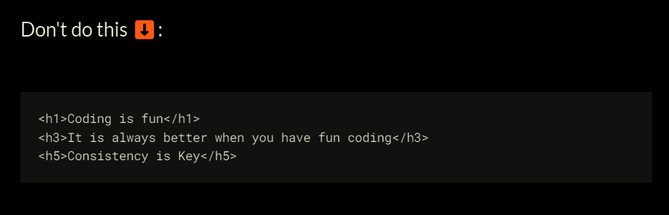

Best practices for HTML
1. Do not use divs to create headers and footers – use semantic elements instead
2. Do not skip heading levels in HTML

3. Use the figure element to add captions to your images in HTML
4. Don't place block-level element within inline elements
How HTML Renders
Tokens
❭Tag Token: <p>
Tag Token: <div>
Attriburte token: class="class-1"
text token : Hello world
Nodes
❭Element node: <p>
Element node: <div>
Attriburte node: class="class-1"
Text Node : Hello world